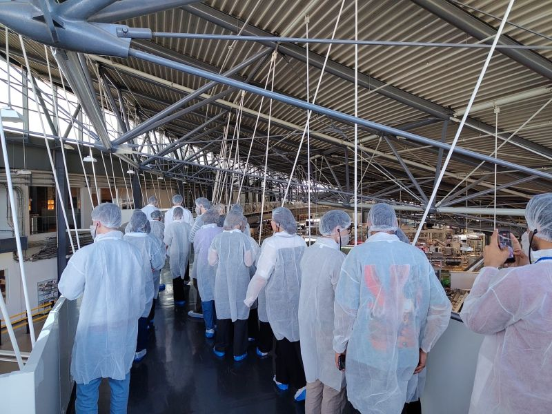
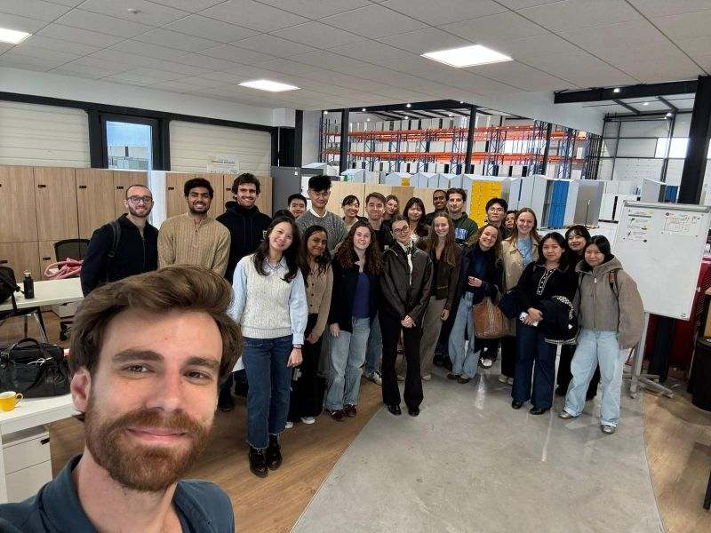
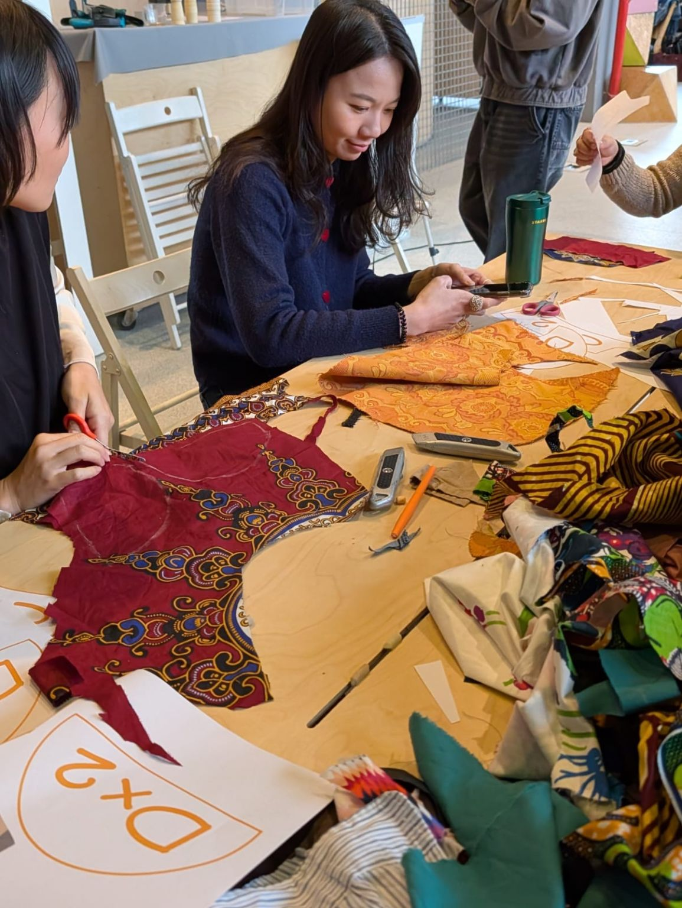
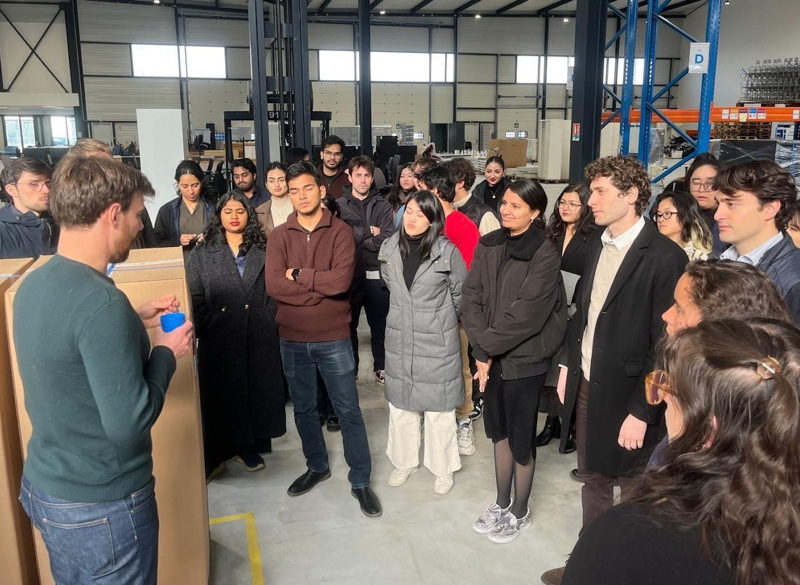
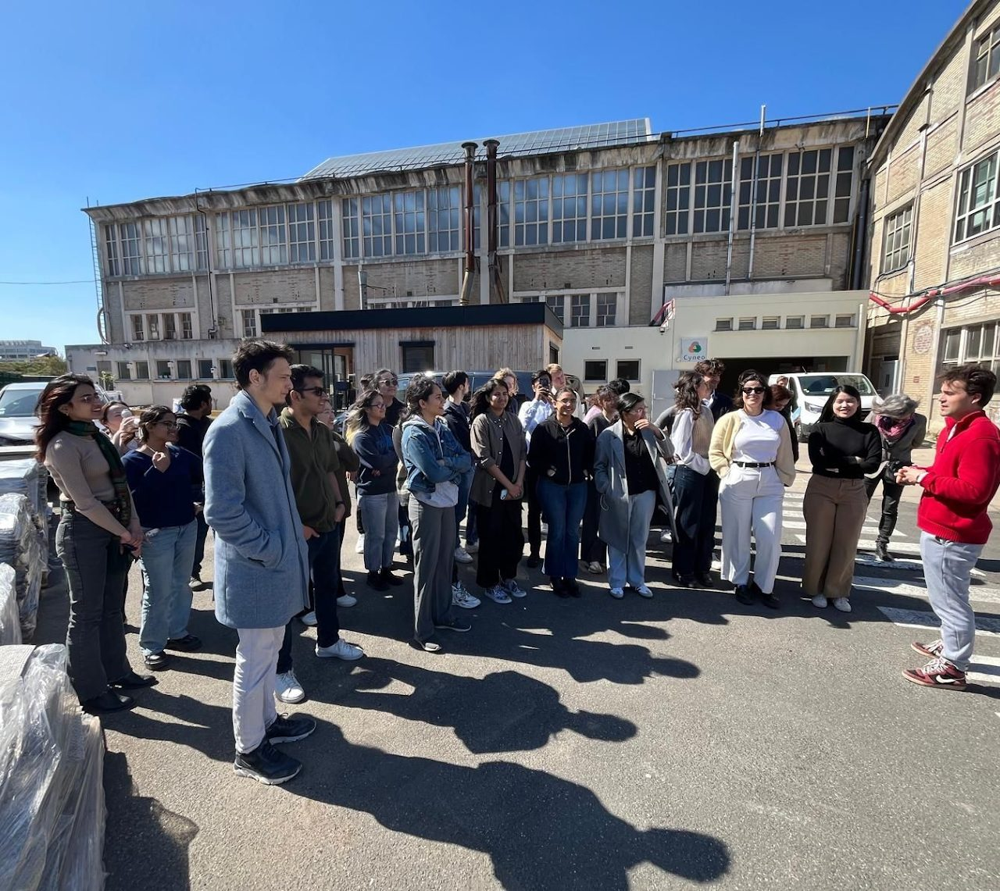
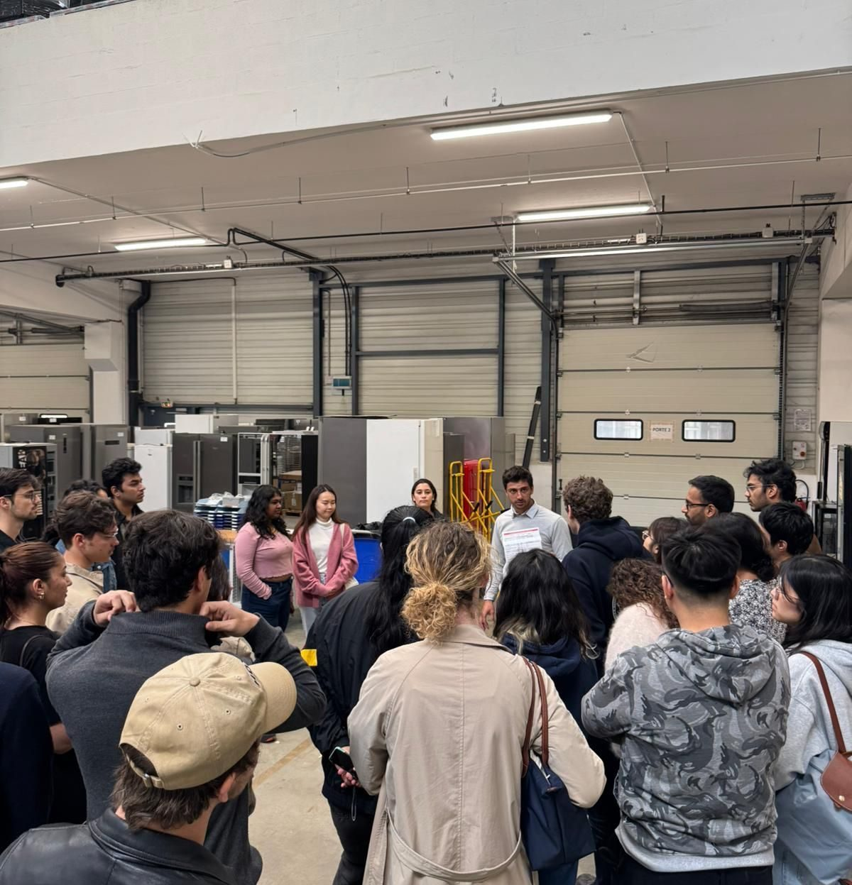
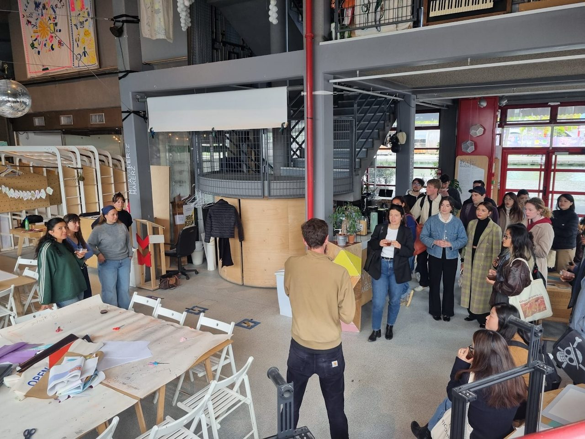

March 2026
L’Oréal
An immersion in how a global company is shifting its models toward circularity — concrete action at industrial scale, from operations to packaging.
The Chair regularly organizes seminars and learning expeditions inside organizations engaged in the circular economy. Students meet practitioners, discover projects, and see how circular strategies are implemented across sectors.
Field visits of the Class of 2026, alongside the consulting work with L’Oréal, SNCF Réseau, Equans and AP-HP.

An immersion in how a global company is shifting its models toward circularity — concrete action at industrial scale, from operations to packaging.

Behind the scenes of circular logistics: how sustainable and circular models are built into operations, with the Manutan teams and Pierre-Emmanuel Saint-Esprit.

Circular solutions in the food ecosystem — reconditioning professional kitchen equipment, and the operational challenges of deploying reuse at scale.

A fablab and making space at Parc de la Villette where innovation, fabrication and collaboration support the ecological transition — hosted with Arthur Clayssen and the team.
Visits of the Class of 2025 — the same ecosystem, a year earlier.

Eco-designed packaging — recyclable, refillable, responsible — and how circularity sits inside a global beauty strategy.

Office furniture given a second life through reuse and recycling, reducing impact inside a circular B2B model.

Reuse of construction materials in Vitry-sur-Seine: recycling, reuse networks, and the systemic changes required to make reuse the norm in building.

Reconditioning of professional kitchen equipment. Students followed the process from collection to refurbishment — reuse as environmental, economic and social value.

A fablab and cultural hub at Parc de la Villette dedicated to creativity, fabrication and sustainability — innovation through experimentation.